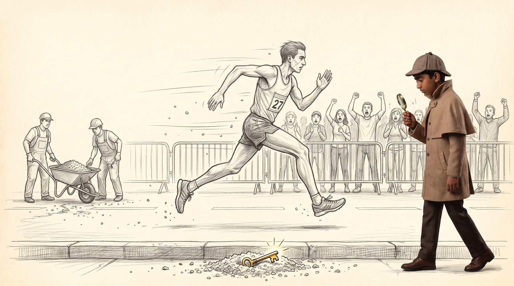
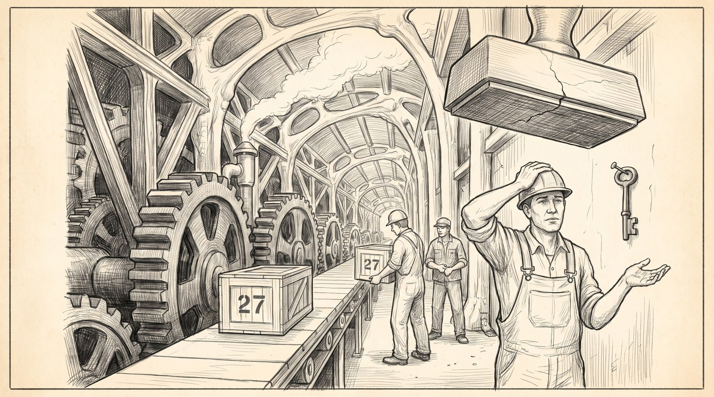
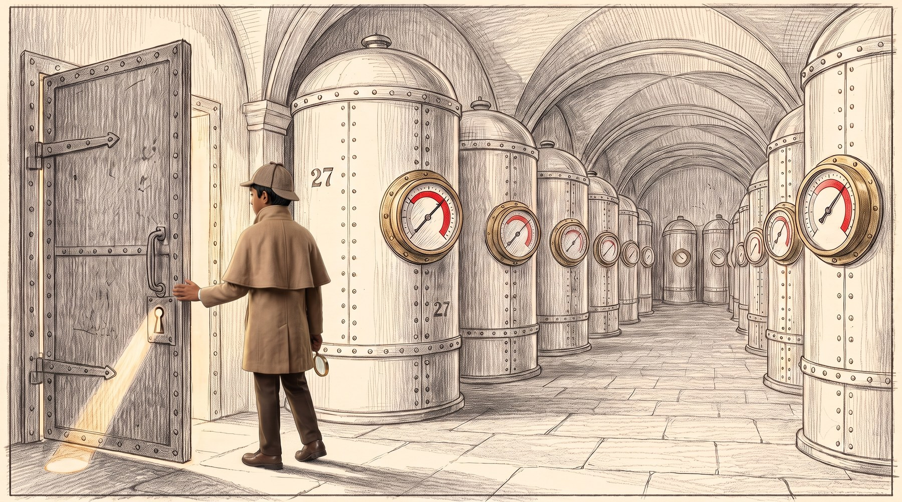
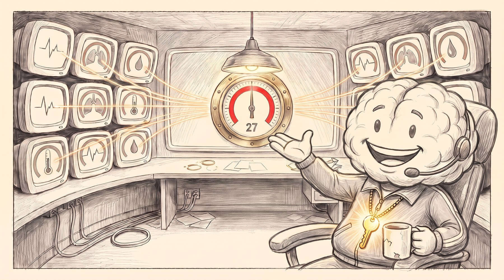
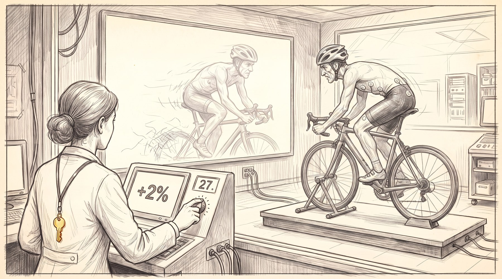
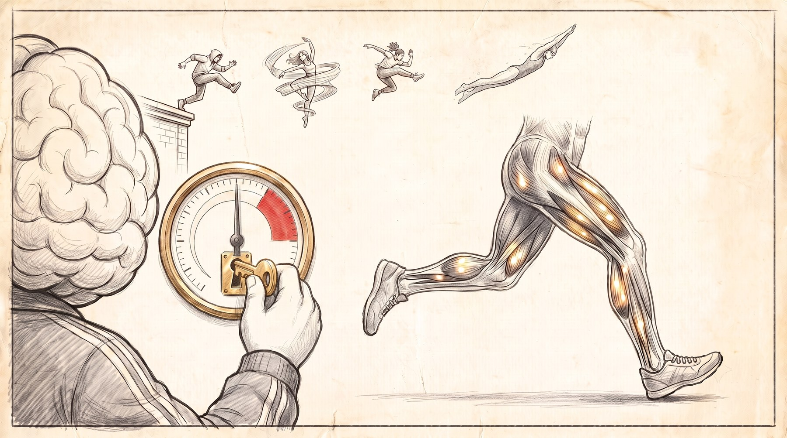
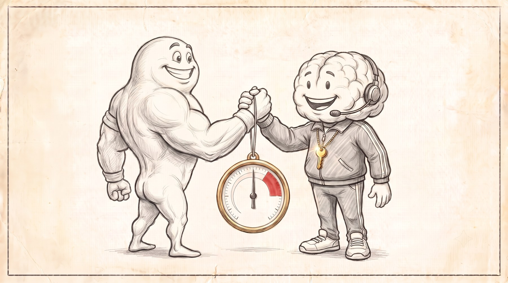
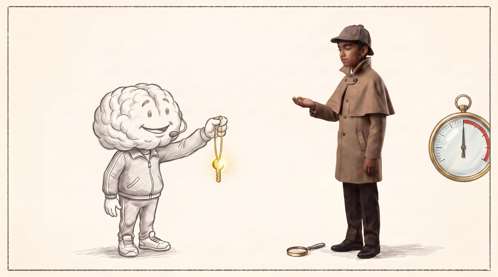

The Brain Brake
Frames
A reference palette for the sound department. Each scene lists the textures we are aiming at, with links to open and hear them, and the one decision that matters most in that scene.
myNoise is free for personal listening only. Recording a generator's output, downloading its stems or resampling it is explicitly forbidden, and putting those sounds into a film requires their embedded licence, negotiated individually. The owner states plainly that credits and non commercial status do not qualify and that an offer is expected.
So these links are a reference palette, not a source. Open a generator, hear exactly the texture we are aiming at, then build or license that texture from one of the sources at the bottom of this page. If a particular myNoise sound turns out to be irreplaceable, we make him an offer at mynoise.net/licensing.php.
The catalogue, for anything listed here by name
Every generator lives at mynoise.net/NoiseMachines/<name>.php. Search this page for any name below.
Open road under flat overcast, a thin crowd, then absolute suspension. The freeze is the sound event, not the sprint.

Verified references, open and listen
Low pressure under the overcast opening, felt rather than heard.
Air across an exposed road. Keep it thin, this is not a storm.
Not for water. For distance and the sense of nothing enclosing you.
Calibrate the crowd bed against this, then bury it.
Very low, one lane of distant road behind the barriers.
Also worth hearing, find these by name in the catalogue
At 0:07 everything stops. This is the most important sound decision in the film. Cut every layer at once, leave one held tone and one breath, and let the audience notice the silence before they notice the boy.
The body as a factory winding down. Sympathetic and orderly, never alarming. Nobody here is panicking.

Verified references, open and listen
The core of this scene. Machine room, steady, no threat in it.
Heavy metal and slow rhythm, the weight of the gears.
The stamp descending. One event, low and enormous.
Engine room hum for the deep layers of the hall.
Also worth hearing, find these by name in the catalogue
The rhythm you establish here returns in scene 6 as a heartbeat. Build it now so the ear can recognise it later without being told.
An enclosed space opening onto an enormous one. The reveal is spatial, so reverb is the instrument.

Verified references, open and listen
Tank hum, almost subsonic, the sound of stored volume.
Depth and scale behind the door.
Shape the room tone with this rather than white, it sits better under speech.
Also worth hearing, find these by name in the catalogue
Push the door open and let the reverb tail grow by a factor of four in one cut. The scale change is the emotion of the scene.
Warm, domestic, absolutely not an alarm. This room means you no harm, and the sound has to say so before he speaks.

Verified references, open and listen
Soft server hum, well down, the room is working not warning.
Distant, outside the walls, for warmth and enclosure.
Also worth hearing, find these by name in the catalogue
The film's most credible two seconds sit here, the subtitle admitting what is unresolved. Drop everything under it. Honesty should sound like nothing.
Clinical, close and quiet, so that one small dishonest click can land.

Verified references, open and listen
Lab equipment, thin, high passed, no warmth.
Room tone only, shaped and almost inaudible.
The knurled dial is the point. One dry, close, conspiratorial click with nothing underneath it. The audience should feel like an accomplice.
The largest sound in the film, and it must arrive out of stillness or it is merely loud.

Verified references, open and listen
A pulse under the body, felt rather than heard. Use as reference for the sub layer.
Air moving upward under the flight montage.
Swell and lift, not water.
Also worth hearing, find these by name in the catalogue
Half the fibres stay dark on screen. Do the same in the mix, hold something back, so the film never sounds like everything at once.
Everything drains to white. Near silence, and the most credible moment in the film.

Verified references, open and listen
Room tone alone, nothing else.
Also worth hearing, find these by name in the catalogue
Two theories agree. No swell, no resolution chord, no triumph. Let the honesty be quiet.
The quietest thirty seconds in the film. One breath, one small metal sound, then out.

Also worth hearing, find these by name in the catalogue
Cut sooner than feels comfortable after the transfer. Every second held past it is a second the audience starts thinking instead of feeling.
Sources we may legally use in the finished film.
Filter to Creative Commons 0. No attribution required, safe for a competition entry. The largest practical source for this film.
Thousands of archive recordings, free for personal, educational and research use. Check the terms against our use before locking anything in.
Free with attribution, paid tier removes the requirement. Strong on mechanical and industrial material, which is most of scene two.
Subscription, broadcast standard, with a good free tier and a fast search that behaves like a proper effects library.
Cleared for film and online publication, includes effects as well as music. The safest option if the film travels.
These matter more than the sources.